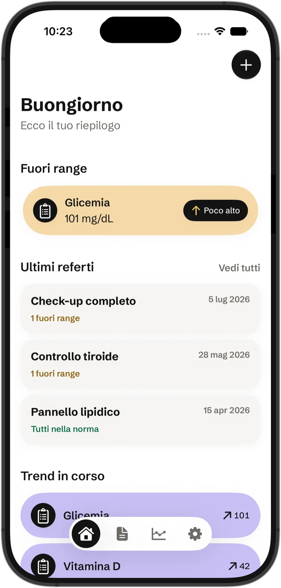
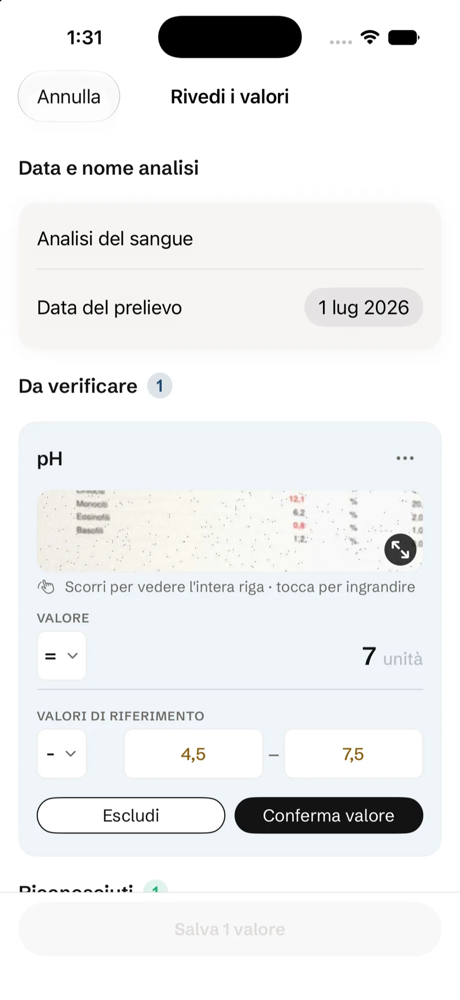
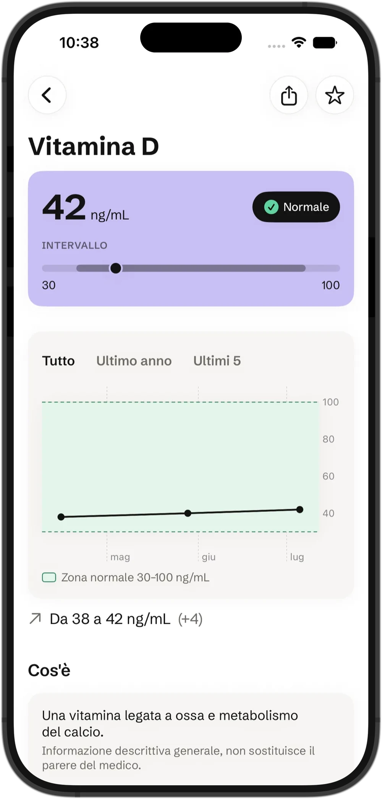
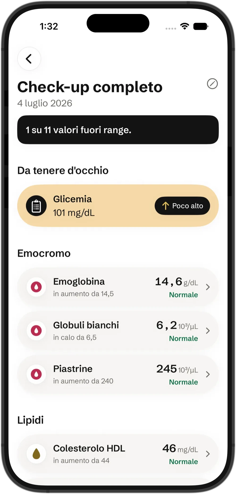
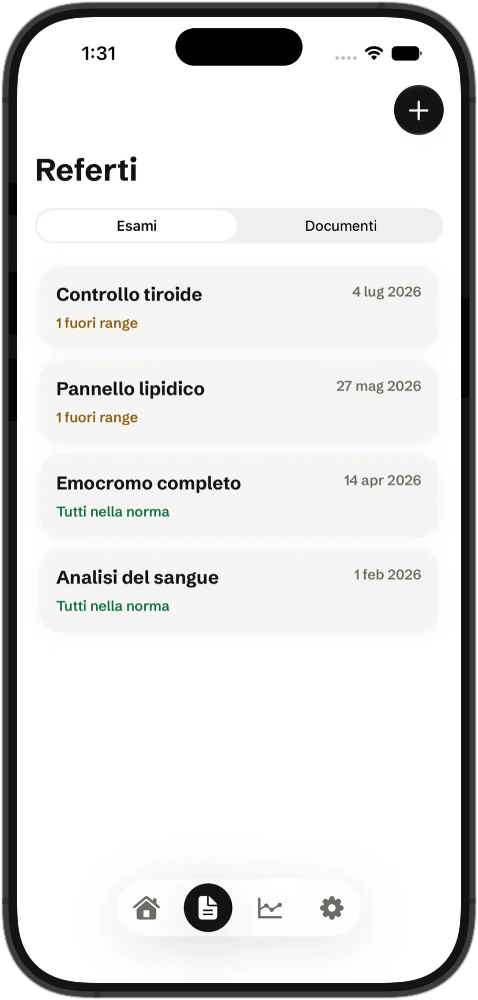
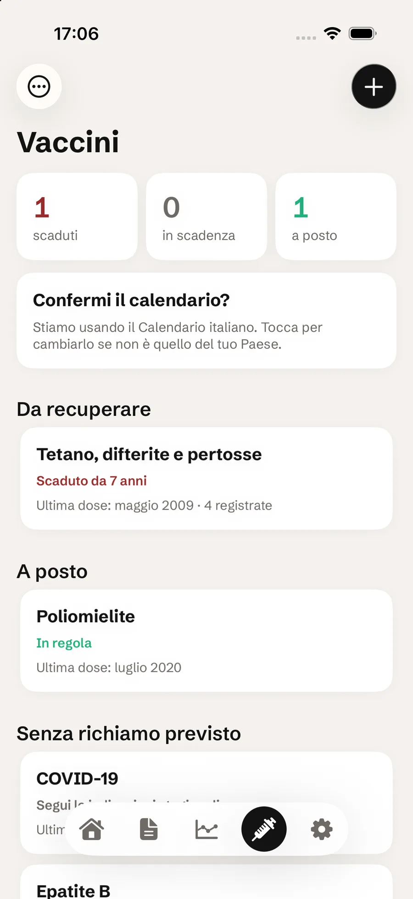

Refertrack legge da solo i valori dai tuoi referti (foto o PDF) e ti mostra l'andamento di ogni parametro nel tempo. E tiene il conto dei vaccini, con le scadenze dei richiami — niente più fogli sparsi o Excel improvvisati.
Lettura dei referti gratis, per sempre · tutto resta sul tuo iPhone

Non devi ricopiare niente a mano: tu fotografi, l'app legge, e da lì in poi ogni controllo si aggiunge da solo alla storia dei tuoi valori.
Scatta una foto del referto, importa il PDF del laboratorio o scegli un'immagine che hai già nella galleria.
L'OCR sul dispositivo legge ogni valore e te lo mostra accanto al pezzo di referto da cui l'ha preso: confermi tu, prima che venga salvato.
Ogni parametro entra nel suo grafico e si unisce ai controlli precedenti, con la zona di riferimento sempre in vista.

Gratis su App Store · richiede iPhone con iOS 26 o successivo.
Fotocamera, un PDF del laboratorio o una foto già nella galleria: l'OCR sul dispositivo legge ogni valore e te lo mostra da confermare prima di salvare — mai un dato inventato.

Un numero da solo dice poco. Refertrack unisce lo stesso parametro tra un referto e l'altro e ti mostra da dove arriva e dove sta andando, con la zona di riferimento in evidenza.

Appena salvato, ogni controllo ti dice quanti valori sono fuori range e cosa è cambiato dalla volta prima, con i parametri già raggruppati per categoria.

Gli esami con i valori da una parte, i documenti dall'altra: ricette, ecografie, lettere di dimissione. Il file originale resta sempre lì, pronto da riaprire o condividere.

Fotografa il certificato vaccinale o inserisci le date a mano: Refertrack riconosce le somministrazioni e calcola quando scade ogni richiamo, sul calendario del tuo Paese. A colpo d'occhio vedi cosa è scaduto, cosa scade presto e cosa è a posto.

Le funzioni che entrano in gioco dopo qualche controllo, quando l'archivio inizia a diventare una storia.
Metti a confronto due controlli, parametro per parametro, e vedi subito cosa è cambiato tra l'uno e l'altro.
Tieni anche i referti e i vaccini di un figlio o di un familiare, separati dai tuoi, sullo stesso telefono.
Ricordati di rifare un esame quando serve. Uno è sempre incluso; con Refertrack+ ne imposti quanti vuoi e ricevi un avviso quando un valore va nella stessa direzione da tre controlli di fila.
Esporta l'andamento di un parametro come immagine e mandalo al tuo medico, senza fargli sfogliare dieci referti.
Refertrack non ha un server. La lettura del referto, i valori e i grafici vivono sul tuo iPhone: non c'è nessun account da creare e nessuno, nemmeno io, può vedere i tuoi esami.
Foto, PDF e riconoscimento dei valori restano dentro l'iPhone: niente viene caricato per essere analizzato altrove.
Non serve registrarsi, non ci sono analytics di terze parti e non c'è pubblicità. Puoi anche proteggere l'app con Face ID.
Se attivi la sincronizzazione, i dati viaggiano cifrati nel tuo iCloud personale — lo stesso di foto e messaggi, non un cloud di Refertrack.
Nessuna prova a tempo e nessuna carta richiesta per iniziare. Refertrack+ aggiunge le funzioni in più, con un abbonamento annuale oppure un acquisto unico.
Il riconoscimento dei referti resta gratuito in ogni caso e nessun dato viene mai eliminato: se non rinnovi, l'archivio e i grafici restano tuoi.
L'app è gratuita e la lettura dei referti lo resta per sempre, senza limiti di scansioni. Refertrack+ costa €14,99 all'anno oppure €44,99 una tantum (a vita, senza rinnovo) e aggiunge confronto tra referti, un profilo in più, avvisi sui valori in movimento, condivisione del grafico, le date esatte dei richiami dei vaccini col libretto di famiglia e promemoria illimitati.
Sì: foto e valori vengono elaborati sul tuo iPhone, mai su un server di Refertrack. Non c'è un account da creare, non c'è tracciamento e l'unico backup è quello del tuo iCloud personale, se lo attivi.
Sì. Refertrack parla italiano, inglese, francese, tedesco e spagnolo, e riconosce i nomi dei parametri anche sui referti stranieri in quelle lingue — utile se ti capita di fare esami all'estero.
Sì. Fotografi il certificato vaccinale o inserisci le date a mano, e Refertrack calcola quando scade ogni richiamo sul calendario del tuo Paese (Italia, Germania, Francia, Spagna) e te lo ricorda. Sapere se un vaccino è scaduto o in regola è gratis; con Refertrack+ vedi le date esatte e gestisci il libretto di tutta la famiglia. Le scadenze sono indicative e non sostituiscono il parere del medico.
No, e non è quello che vuole fare. Refertrack organizza i tuoi valori e ti mostra come si muovono rispetto agli intervalli di riferimento del laboratorio: non fa diagnosi e non sostituisce il parere del tuo medico.
Su iPhone con iOS 26 o successivo. I dati si sincronizzano tra i tuoi dispositivi tramite il tuo iCloud personale, se attivi la sincronizzazione.
Scaricala gratis, fotografa il primo referto e guarda cosa succede al prossimo controllo.